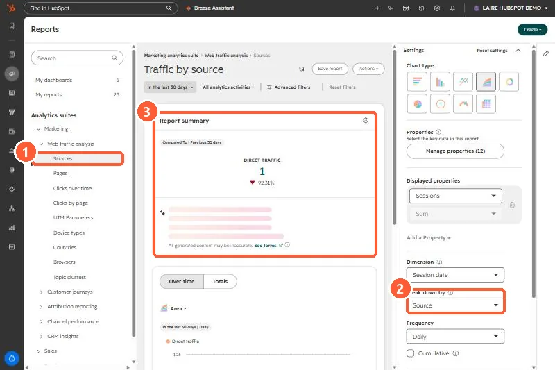

Short answer
HubSpot puts a session in Other campaigns when the URL has a utm_source, utm_medium, utm_campaign or source parameter that does not contain email, adword, ppc or cpc. The KB says this usually comes from tracking URLs. In the Sources report, click the Sessions number for Other campaigns to see the utm_campaign values, then click a campaign to see its source and medium.
1. The Sources report
It now lives under Reports, Marketing analytics suite, Web traffic analysis. My demo portal only had direct traffic in the last 30 days, so no Other campaigns row shows here.


2. Why a spike lands there
- A new link with UTM parameters, such as a newsletter, partner post or QR code, whose medium is not email or paid search.
- A paid campaign whose medium is not one of the words HubSpot looks for, so it is not counted as paid search.
3. Make links land in the right bucket
Use HubSpot's tracking URL builder and consistent mediums. See the tracking URL builder. On contacts, the Original and Latest Traffic Source drill-down properties store the campaign name and source/medium for these sessions.